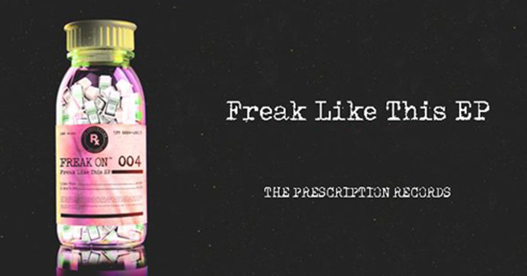

FREAK ON Hits the Streets With His Debut ‘Freak Like This’ EP on the Prescription Records


Earlier this year, G-house specialist Dr. Fresch laid down the framework for his own imprint, The Prescription Records, by rounding up a quality cast of like-minded producers for a nine-track compilation album, The Remedy. One of the artists tagged on that stacked package was a bright talent named FREAK ON, who is now reappearing on the label with a street-ready two-tracker.
“I wanted to show both sides of my production with my debut EP,” says FREAK ON. “The A-side, ‘Like This,’ showcases my love for tech house and original, goofy vocals. ‘I Don’t Die’ showcases the darker side of my production, with its sinister vocals and deep groove.”
Freak Like This is a two-track EP that fuses pulsing tech house grooves with a UK bass vibe. “Like This” gets things done with a legit G-house vocal, while “I Don’t Die” takes things down a darker, more hypnotic path littered with breakbeats among its four-four rhythm.
“FREAK ON’s debut EP is a total smash,” Dr. Fresch tells Insomniac. “The EP showcases his ability to work a dancefloor, as well as his versatility in sound design. ‘Like This’ is a monster of a club track that has been dominating my sets for some time. Expect huge things from FREAK ON this year—he is packing some serious heat and is making his way into more and more DJs’ libraries. I’m excited to introduce him to the world!”
Freak On’s Freak Like This EP is available here.
Follow FREAK ON on Facebook | Twitter | SoundCloud
Follow Prescription Records on Facebook | Twitter | SoundCloud